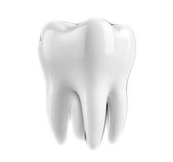

تجربة زراعة أسنان رقمية متكاملة
ابتسامتك الكاملة، بدقة رقمية لا تقبل الخطأ
تحت إشراف مباشر من د. طارق السعدي، أحد رواد طب الأسنان الرقمي في دولة الإمارات بخبرة +20 سنه في الزراعه الرقميه, يتم التخطيط لكل حالة رقميًا بدقة كاملة قبل أي تدخل جراحي، لتحقيق نتيجة يمكن التنبؤ بها منذ اليوم الأول.
@dr.tariqsaadi
لتتعرف اكتر عن الطبيب وبعض حالات مرضاه
Full-Arch Implants
Intraoral Scanning
CAD/CAM
3D Printing
CBCT Imaging